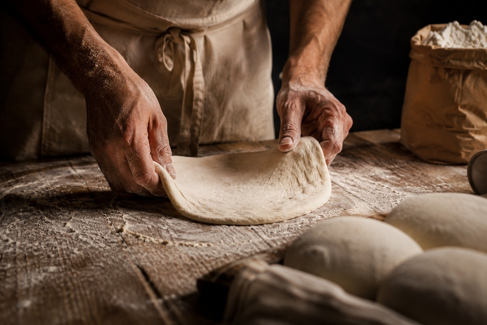

Unsere Geschichte
L'Italiana wurde aus der Leidenschaft für die unverfälschte neapolitanische Pizza geboren. In Siegen haben wir einen Ort geschaffen, an dem Tradition auf modernstes Handwerk trifft.
Unser Geheimnis? Geduld. Unser Teig ruht volle 96 Stunden, bevor er in den handgemauerten Ofen kommt. Wir verwenden nur die feinsten Zutaten: San Marzano Tomaten vom Fuße des Vesuvs und echten Büffelmozzarella aus Kampanien.
Jeden Morgen formen unsere Pizzaioli den Teig von Hand — kein Workflow, keine Abkürzungen. Nur Hände, Mehl und 40 Jahren Erfahrung aus Neapel.

Il viaggio
Von Neapel nach Siegen.
Neapel — das Rezept
Nonna Rosa backt in ihrer kleinen Trattoria am Hafen von Neapel die erste Pizza nach dem Familienrezept: 96 Stunden Teigruhe, San Marzano, Büffelmozzarella. Mehr braucht es nicht.
Der Traum von Deutschland
Enzo, Enkel von Nonna Rosa, kommt mit einem Koffer voller Rezepte nach Deutschland. Ein Steinofen, ein Traum: echte neapolitanische Pizza im Sauerland.
Eröffnung in Siegen
In der Kölner Straße öffnet L'Italiana ihre Türen. Der handgemauerte Steinofen wird angeheizt — und bleibt seitdem auf 450°C.
Zwei Standorte, 380 Bewertungen
Mit dem zweiten Standort in Weidenau, unserem Catering-Service und 4,9 Sternen bei Google ist aus dem kleinen Laden ein Stück Italien geworden — mitten in Siegen.
I nostri valori
Wofür wir stehen.
Echte Zutaten
San Marzano D.O.P., Büffelmozzarella aus Kampanien, Olivenöl aus Apulien. Kein Ersatz, keine Kompromisse.
96 Stunden Geduld
Unser Teig braucht Zeit, damit er leicht und luftig wird. langsam fermentiert ist es auch bekömmlicher.
Gastfreundschaft
Bei uns sind Sie nicht Kunde, sondern Gast. Ciao, ein Lächeln und eine Pizza, die von Herzen kommt.
La famiglia
Die Menschen hinter dem Ofen.
„Qualität ohne Kompromisse. Gastfreundschaft, die von Herzen kommt. Ein Stück Italien in jedem Biss.“